Patrones de comportamiento
Los patrones de comportamiento estudian las relaciones entre llamadas entre los diferentes objetos, normalmente ligados con la dimensión temporal.
Chain of Responsibility
Evita acoplar el emisor de una petición a su receptor, al dar a más de un objeto la posibilidad de responder a la petición. Crea una cadena con los objetos receptores y pasa la petición a través de la cadena hasta que esta sea tratada por algún objeto.
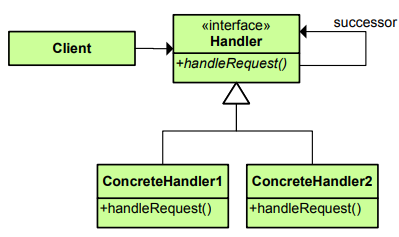
Ejemplo
# patron
class Handler:
def __init__(self):
self.__succesor__ = None
def set_succesor(self, succesor):
self.__succesor__ = succesor
def handler_request(self, opt):
pass
class HandlerOptionOne(Handler):
def handler_request(self, opt):
if opt == 1:
print("Domingo")
else:
self.__succesor__.handler_request(opt)
class HandlerOptionTwo(Handler):
def handler_request(self, opt):
if opt == 2:
print("Lunes")
else:
self.__succesor__.handler_request(opt)
class HandlerOptionThree(Handler):
def handler_request(self, opt):
if opt == 3:
print("Martes")
else:
self.__succesor__.handler_request(opt)
class HandlerOptionFour(Handler):
def handler_request(self, opt):
if opt == 4:
print("Miercoles")
else:
self.__succesor__.handler_request(opt)
class HandlerOptionFive(Handler):
def handler_request(self, opt):
if opt == 5:
print("Jueves")
else:
self.__succesor__.handler_request(opt)
class HandlerOptionSix(Handler):
def handler_request(self, opt):
if opt == 6:
print("Viernes")
else:
self.__succesor__.handler_request(opt)
class HandlerOptionSeven(Handler):
def handler_request(self, opt):
if opt == 7:
print("Sabado")
else:
self.__succesor__.handler_request(opt)
class HandlerOptionDefault(Handler):
def handler_request(self, opt):
print("Opción no valida")
# ejemplo
class EjemploCadena:
def obtener_nombre(self):
return "Chain of responsability"
def operacion(self,opcion=5):
cadena = [HandlerOptionSix(), HandlerOptionTwo(), HandlerOptionThree(), HandlerOptionFour(),
HandlerOptionFive(), HandlerOptionOne(), HandlerOptionSeven(), HandlerOptionDefault()]
for i in range(len(cadena)-1):
cadena[i].set_succesor(cadena[i+1])
#opcion = int(input("ingrese un número: "))
cadena[0].handler_request(opcion)
Jueves
Command
Encapsula una petición en un objeto, permitiendo así parametrizar a los clientes con distintas peticiones, encolar o llevar un registro de las peticiones y poder deshacer la operaciones.
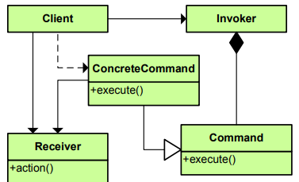
# patron
class Command:
def execute(self, recivier):
pass
class Recivier():
def show_message(self, msg):
print(msg)
class DomesticEngineer(Command):
def execute(self, recivier):
recivier.show_message("take out the trash")
class Politician(Command):
def execute(self, recivier):
recivier.show_message("take the money from the rich, take the votes from poor")
class Programmer(Command):
def execute(self, recivier):
recivier.show_message("sell the bugs, charge extra for the fixes")
# ejemplo
class EjemploCommand:
def obtener_nombre(self):
return "Command"
def operacion(self):
comandos = [Politician(), DomesticEngineer(), Programmer()]
r = Recivier()
for i in comandos:
i.execute(r)
take the money from the rich, take the votes from poor
take out the trash
sell the bugs, charge extra for the fixes
Interpreter
Dado un lenguaje, define una representación de su gramática junto con un intérprete que usa dicha representación para interpretar las sentencias del lenguaje.
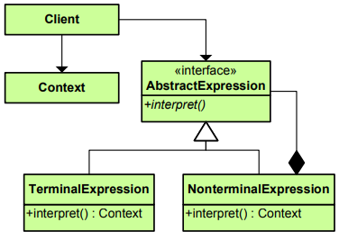
# patron
class Expresion:
def __init__(self, value=None, left=None, right=None):
self.__value__ = value
self.__left__ = left
self.__right__ = right
class ExpresionNumber(Expresion):
def evaluate(self):
return int(self.__value__)
class ExpresionPluss(Expresion):
def evaluate(self):
return self.__left__.evaluate() + self.__right__.evaluate()
class ExpresionMinus(Expresion):
def evaluate(self):
return self.__left__.evaluate() - self.__right__.evaluate()
# ejemplo
class EjemploInterpreter:
def obtener_nombre(self):
return "Interpreter"
def operacion(self):
operacion = ExpresionPluss(left=ExpresionNumber(value='15'),right=ExpresionMinus(left=ExpresionNumber(value='25'), right=ExpresionNumber(value='5')))
print(operacion.evaluate())
35
Otros Patrones
- Iterator: Proporciona un modo de acceder secuencialmente a los elementos de un objeto agregado sin exponer su representación interna.
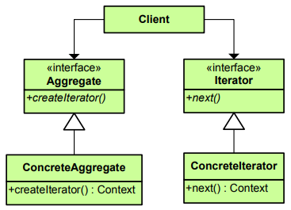
- Mediator: Define un objeto que encapsula cómo interactúan un conjunto de objetos. Promueve un bajo acoplamiento al evitar que los objetos se refieran unos a otros explícitamente, y permite variar la interacción entre ellos de forma independiente.
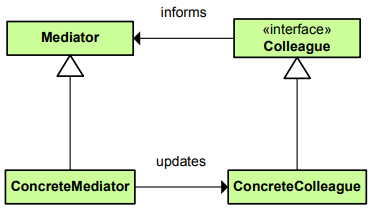
- Memento: Representa y externaliza el estado interno de un objeto sin violar la encapsulación, de forma que éste puede volver a dicho estado más tarde.
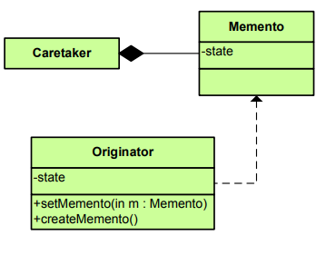
- Observer: Define una dependencia de uno-a-muchos entre objetos, de forma que cuando un objeto cambia de estado se notifica y actualizan automáticamente todos los objetos.
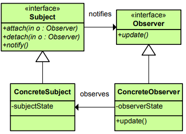
- State: Permite que un objeto modifique su comportamiento cada vez que cambia su estado interno. Parecerá que cambia la clase del objeto.
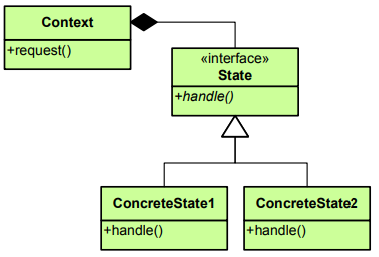
- Strategy: Define una familia de algoritmos, encapsula uno de ellos y los hace intercambiables. Permite que un algoritmo varíe independientemente de los clientes que lo usan.
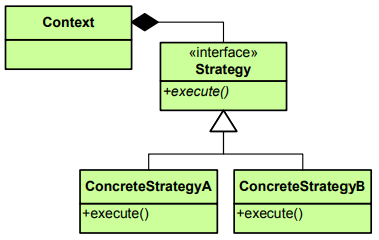
- Template Method: Define en una operación el esqueleto de un algoritmo, delegando en las subclases algunos de sus pasos. Permite que las subclases redefinan ciertos pasos del algoritmo sin cambiar su estructura.
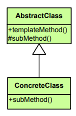
- Visitor: Representa una operación sobre los elementos de una estructura de objetos. Permite definir una nueva operación sin cambiar las clases de los elementos sobre los que opera.
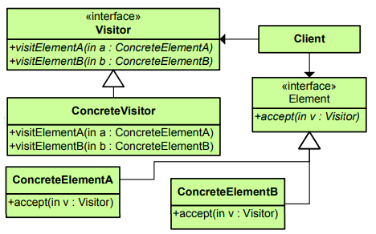